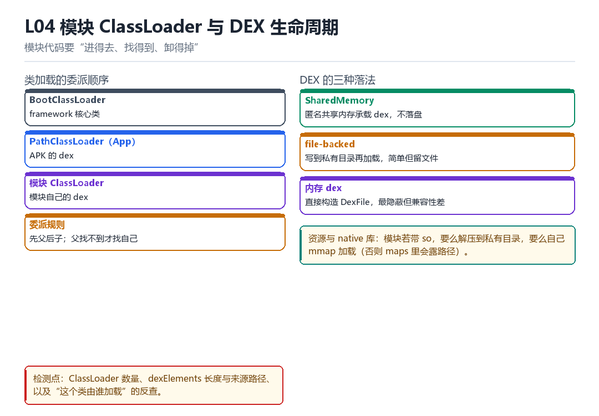

模块 ClassLoader 与 DEX 生命周期
委派顺序、SharedMemory、file-backed DEX、dexElements、资源与 native library
模块代码要“进得去、找得到、卸得掉”。
4.1 类加载的委派顺序

| 加载器 | 负责 | 备注 |
|---|---|---|
| BootClassLoader | framework 核心类 | 最顶层 |
| PathClassLoader（App） | APK 的 dex | 业务代码 |
| 模块 ClassLoader | 模块自己的 dex | 需要能被 App 找到 |
委派规则是“先父后子”：先让父加载器找，找不到才找自己。这也解释了为什么模块类不能被 App 直接引用——它们不在同一条委派链上，需要显式桥接。
4.2 DEX 的三种落法
| 方式 | 优点 | 缺点 |
|---|---|---|
| SharedMemory | 不落盘，匿名共享内存 | 实现复杂 |
| file-backed | 简单可靠 | 私有目录留文件 |
| 内存 dex | 最隐蔽 | 兼容性差 |
4.3 资源与 native 库
模块若带资源，要自己构造 Resources 或把资源并入宿主；若带 so，要么解压到私有目录再 dlopen，要么自己 mmap 加载（否则 maps 里会露路径，见 F09/F11）。
4.4 本章自测
- 委派顺序为什么是“先父后子”？
- 三种 DEX 落法各自的取舍是什么？
- 模块类为什么不能被 App 直接引用？
- 卸载失败通常是什么原因？
4.10 深入：SharedMemory 方案的实现要点
思路是：把 dex 内容写进一块匿名共享内存（memfd 或 ashmem），然后构造一个 DexFile 直接指向这块内存。这样既不落盘，也不在 maps 里显示为“文件”。
1. memfd_create() 或 ashmem 分配
2. write() 写入 dex 字节
3. 构造 DexFile（openInMemory 版本，视 API 而定）
4. 把 DexFile 塞进 dexElements4.5 原理推演：为什么“先父后子”的委派顺序很重要
因为它保证了“核心类不会被替换”。如果子加载器能覆盖 java.lang.String，整个运行时就会崩。所以委派顺序是“安全边界”，不是“实现细节”。
| 层次 | 能否被覆盖 | 原因 |
|---|---|---|
| BootClassLoader | 否 | 最顶层 |
| App ClassLoader | 部分 | 可插入自己的类 |
| 模块 ClassLoader | 是 | 自己的命名空间 |
这也解释了为什么“模块类不能直接被 App 引用”：它们不在同一条委派链上，App 的加载器根本不知道它们存在。
4.6 数据细节：dexElements 的插入位置
// 插到最前面：你的类优先（可能覆盖宿主）
// 插到最后面：宿主优先（更安全）
// 实践中通常插到最前面，但要避免覆盖核心类4.7 深入：模块资源的两种挂法
| 方式 | 做法 | 优点 | 缺点 |
|---|---|---|---|
| 合并进宿主 | 把资源加进宿主的 AssetManager | App 能直接用 | 改动宿主 |
| 独立 Resources | 自己构造 Resources 对象 | 隔离干净 | 要处理 density/配置 |
合并进宿主的做法更“透明”（App 完全感知不到），但需要反射修改 AssetManager 的内部路径列表；独立构造更干净，但每个 API 都要显式传 Resources。
4.8 深入：native 库的三种加载方式
- 解压到私有目录再 dlopen：最简单，但会在文件系统留下 so 文件。
- 从 APK 里直接 mmap 加载：不落盘，但要自己处理重定位（见 F09）。
- 用 memfd 承载：内存文件，dlopen 后 maps 里显示
/memfd:name，仍算“半隐蔽”。
| 方式 | 落盘 | maps 显示 | 实现难度 |
|---|---|---|---|
| 解压 + dlopen | 是 | 私有路径 | 低 |
| mmap 自加载 | 否 | 匿名段 | 高 |
| memfd + dlopen | 否 | /memfd:name | 中 |
4.9 实战：确认模块类真的被加载了
// Frida 侧
Java.enumerateClassLoaders({ onMatch: l => console.log(l), onComplete: () => {} });
// 或者直接尝试加载
// 抛 ClassNotFoundException = 没加载 / 路径不对第一行 findClass 为什么会抛异常
模块的 handleLoadPackage 里写了一句 XposedHelpers.findClass('com.target.Sign', lpparam.classLoader)，跑得好好的；换成 Class.forName('com.target.Sign') 却抛了 ClassNotFoundException。同一个类、同一个进程，只因为换了一个加载器就找不到——这是模块工程里第一道劝退坎。原因不玄：在 ART 里，一个类的身份是 (ClassLoader, 类名) 二元组，两个加载器加载同名类得到的是两个互不兼容的 Class 对象，连强转都会失败。
再往下一层，模块自己带来的 DEX 该放在哪、能不能用匿名内存、带资源的模块怎么拿到 Resources、带 so 的模块又该怎么 System.load，最后是'什么时候能卸掉'。这一整串问题的答案都挂在一条委派链上。把方向画对，其余都是顺推。
谁看得见谁：把委派方向画对
- BootClassLoader → framework 类：最顶层，负责
java.lang、android.*等；结果是所有子加载器都能看到系统类，且这些类全局只有一份。 - App 的 PathClassLoader → APK dex：parent 是 BootClassLoader，先委托父、父找不到才查自己的
DexPathList.dexElements；结果是业务类由它独占，别的加载器看不见。 - 框架 → 模块 ClassLoader：LSPosed 为每个模块建一个加载器，把 parent 设成 App 的 ClassLoader（而不是反过来）；结果是模块代码里能
findClass到宿主类。 - 模块代码 → 宿主类：用
lpparam.classLoader显式查找，而不是Class.forName；结果是拿到正确的Class对象，反射调用与 hook 才能对上号。 - 宿主代码 → 模块类：查不到，因为委派只会向上不会向下；结果是模块类对 App 天然隐身，这既是限制，也是一层隔离。
- 框架 → 桥接：需要让宿主'看见'某个模块类型时，只能由框架显式注入引用或改 dexElements；结果是这类桥接每多一处，就多一处可被枚举的结构差异。
第 3 拍的方向最容易记反。很多人以为是'把模块 dex 塞进 App 的加载器'，实际正相反：是让模块加载器挂在 App 加载器下面，于是模块能向下看不见自己、向上看得见宿主。Class.forName 用的是'调用者所在类的加载器'，调用者是模块类，自然掉进这条链的另一端。
DEX 落地的三种姿势与一次卸载
- file-backed：把 dex 释放到
code_cache或私有目录再DexClassLoader加载——最稳，但/proc/self/maps里会留一条带路径的可读映射。 - InMemoryDexClassLoader / SharedMemory：API 26+ 传
ByteBuffer[]，或memfd_create后 走匿名 fd——不落盘，代价是要处理 fd 生命周期与不同 ROM 的兼容。 - 纯内存 dex：自己构造
DexFile并插入dexElements——最不显眼，也最容易在版本升级后失效。 - 资源：模块资源不并进宿主的 id 空间，用
AssetManager.addAssetPath构造独立Resources；少这一步，getIdentifier会一律返回 0。 - native 库：
System.load要一个真实路径，通常从 APK 的lib/<abi>/释放到私有目录；想直接从 APKdlopen得自己处理android_dlopen_ext与对齐。 - 卸载：只要还有任一强引用——存活实例、静态字段、线程的
contextClassLoader、JNI global ref——ClassLoader 就不会被回收，System.load过的 so 更是进程期内无法真正卸载。
最后一条常被误读成'忘了置空变量'。实际排查时，十有八九是某个后台线程创建于模块加载期间，它的 contextClassLoader 一直抓着模块加载器；或者一个 JNI NewGlobalRef 把模块类钉住了。所以 LSPosed 的模块热更新通常要重启目标进程，而不是在进程内做优雅卸载。
可复现：把加载器树打出来
// 遍历所有已加载的 ClassLoader，观察父子关系与 dex 来源
ClassLoader cl = Thread.currentThread().getContextClassLoader();
for (int i = 0; cl != null; i++) {
Log.d("probe", i + ": " + cl.getClass().getName());
cl = cl.getParent();
}
Log.d("probe", "app=" + lpparam.classLoader);
Log.d("probe", "self=" + getClass().getClassLoader());
Log.d("probe", "host=" + XposedHelpers.findClass("com.target.Sign", lpparam.classLoader));
// 干净基线：从 contextClassLoader 往上只有 PathClassLoader -> BootClassLoader看到什么算成功：self 与 app 是两个不同的加载器，self 向上能走到 app，而 host 打印出 class com.target.Sign 不抛异常，同时 adb shell cat /proc/[PID]/maps | grep -E 'dex|apk' 的数量与干净基线差得有解释。看到什么算失败：host 抛 ClassNotFoundException——先确认传的是 lpparam.classLoader 而不是 getClass().getClassLoader()；或者 self.getParent() 直接是 BootClassLoader，说明 parent 装配错了，模块看不到任何宿主类。把注入前后两份日志 diff 一下，多出来的那条加载器就是模块自己。
| 加载器 | parent | 能看见 | 看不见 | 卸载条件 |
|---|---|---|---|---|
| BootClassLoader | 无 | framework / java.* | 任何 App 类 | 进程结束 |
| App PathClassLoader | BootClassLoader | APK 内全部业务类 | 模块类 | 进程结束 |
| 模块 ClassLoader | App ClassLoader | 宿主类 + 自己的 dex | 其它模块的类 | 所有强引用断开 |
| InMemoryDexClassLoader | 通常为 App 或 Boot | ByteBuffer 里的类 | 落盘路径（无） | dex 字节与实例皆释放 |
把这条链与第三部 F09 的 Frida 自定义 linker 对读，会看到同一套'自己造加载器、自己维护账本'的做法搬到了 native 层：Java 侧是 dexElements，so 侧是 solist。第二部 K04 讲 fd、inode 与 VMA 时那段'映射有没有 back-file'，正好判了 file-backed 与匿名 dex 的生死。训练营 T01 做自写靶场 App 时，第一道检测写成'枚举 ClassLoader 并核对来源路径'，用的就是本章这张表。